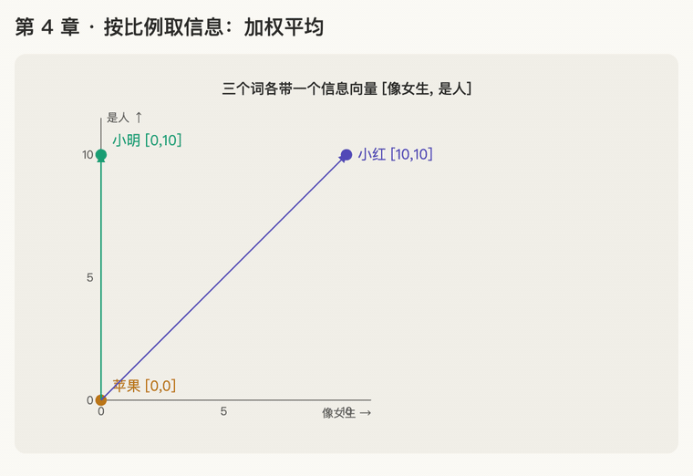

第 4 章 · 按比例取信息：加权平均
本章回答：比例分好了，"她"最后怎么把别的词的信息拿过来？
讲解日期：2026-10-25 · 上一章：第 3 章 softmax（上） · 下一章：第 5 章 次方与 e
本章缩写：FFN = Feed-Forward Network（前馈网络）；softmax = soft（柔和的）+ max（取最大）：按大小分比例，不是只挑最大的；CS336 = Stanford 课程 CS 336（Computer Science 336，Language Modeling from Scratch）。全部缩写见 附录 · 缩写与术语表
讲解
生活里的同款：期末总评
总评 = 平时成绩 × 30% + 期末成绩 × 70%
每项乘上它的比例，再加起来。比例大的那项对结果影响大。这叫加权平均。
attention 里加起来的是"信息向量"
假设每个词带着一个 2 维的信息向量 [像女生的程度, 是人的程度]，比例用第 3 章算出来的：
| 词 | 信息向量 | 比例 |
|---|---|---|
| 小明 | [0, 10] | 0.25 |
| 苹果 | [0, 0] | 0.125 |
| 小红 | [10, 10] | 0.625 |
每个向量乘上它的比例，再按位置加起来。第 1 个位置：
0.25 × 0 + 0.125 × 0 + 0.625 × 10 = 6.25
一个数乘一个向量，就是向量的每个位置都乘这个数：0.625 × [10, 10] = [6.25, 6.25]。
结果说明什么
算完两个位置，"她"得到新向量 [6.25, 8.75]：比较像女生，并且很确定是人。读完这句话后，模型对"她"的理解，大部分是从小红那里取来的信息。
attention 的作用：每个词通过"看"别的词，更新自己的含义。
attention 的完整四步
词变向量 → 点积打分 → softmax 分比例 → 按比例取信息
- 每个词都变成一串数字（第 1 章）
- 用"她"的向量和每个词做点积，算出谁和"她"关系大（第 2 章）
- 用 softmax 把分数变成比例，小红占大头（第 3 章）
- 按比例把各个词的信息拿过来，主要拿小红的（本章）
公式
- \(\mathbf v_j\)：第 j 个词携带的信息向量（v = value）
- \(p_j\)：它分到的比例
- \(\mathbf o\)：最后得到的新向量（o = output）
动画演示：三个信息向量按比例缩短、首尾相接

可交互版：animations/04-weighted-average.html（要能点按钮、拖滑块，需要用本地服务打开，见 animations/README.md"跑起来看"）。
怎么看：
- 横轴"像女生"、纵轴"是人"：小明 [0, 10]、苹果 [0, 0]、小红 [10, 10]；
- 每个向量乘上比例 0.25、0.125、0.625（箭头缩短）；
- 缩短后的箭头首尾相接，终点就是"她" = [6.25, 8.75]；
- 结果总落在三个点围成的三角形里；滑块：小红分数越高，"她"越靠近小红。
练习与作答记录
题：用同样方法算第 2 个位置（是人的程度）。
作答：用户说"继续"，这道题没有自己作答，由讲解给出： 0.25 × 10 + 0.125 × 0 + 0.625 × 10 = 2.5 + 0 + 6.25 = 8.75。
提示：这题适合复习时自己重算一遍（R10）。
本章复习卡片
R09 attention 四步 · R10 按比例取信息（见 review.md）
附录 · 延伸阅读
留给以后深入学习用，不影响本章主线。★ 是建议先读的。
- 本地论文的文本版在materials/text/papers/，表里的行号就是指这个文本版。
- CS336 handout 在cs336-spring2025/materials/text/cs336_spring2025_assignment1_basics.txt。
推荐阅读
| 读什么 | 读哪里 | 读它为了什么 |
|---|---|---|
| ★ Attention Is All You Need | §3.2，L145–L162 | 原文的定义："输出是 values 的加权和" |
| ★ Jay Alammar, The Illustrated Transformer（https://jalammar.github.io/illustrated-transformer/） | Self-Attention 部分 | 用图一步步看"打分 → 比例 → 加权求和" |
| Bahdanau et al. 2014 | §3.1，上下文向量 \(c_i\) 的公式 | attention 最早的样子：就是对编码器的输出做加权平均 |
| 《动手学深度学习》d2l.ai（https://d2l.ai/chapter_attention-mechanisms-and-transformers/index.html） | 注意力汇聚 / Nadaraya–Watson 核回归 | attention 的"前身"：按相似度对样本做加权平均 |
| Formal Algorithms for Transformers | Algorithm 3 Basic single-query attention | 一个词的 attention，最简伪代码 |
数学原理
- 期望 expectation：把 softmax 的比例当成概率，"按比例取信息"就是在算 v 的期望值。
- 凸组合 convex combination：权重都 ≥ 0 且加起来是 1 的加权和。结果一定落在这几个 v 的"中间"，不会跑出它们围成的范围。所以 attention 只能混合已有的信息，不能凭空造出新方向（新方向要靠后面的 FFN）。
公式清单
| 公式 | 意思 |
|---|---|
| \(\mathbf o = \sum_i p_i \mathbf v_i\) | 按比例取信息（加权平均） |
| \(\mathbb{E}[X] = \sum_i p_i x_i\) | 期望，形状和上面完全一样 |
| \(\mathbf c_i = \sum_j \alpha_{ij} \mathbf h_j\) | Bahdanau 的上下文向量，α 就是比例 |